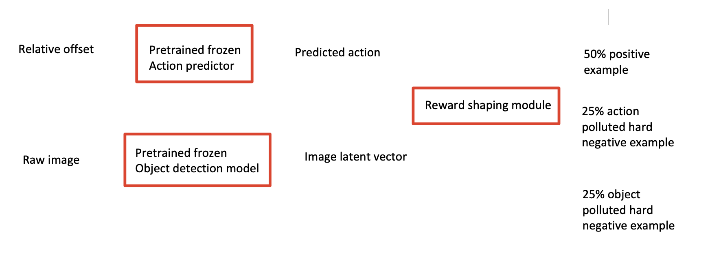
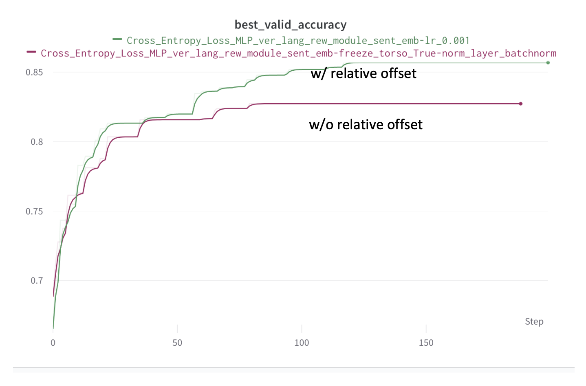
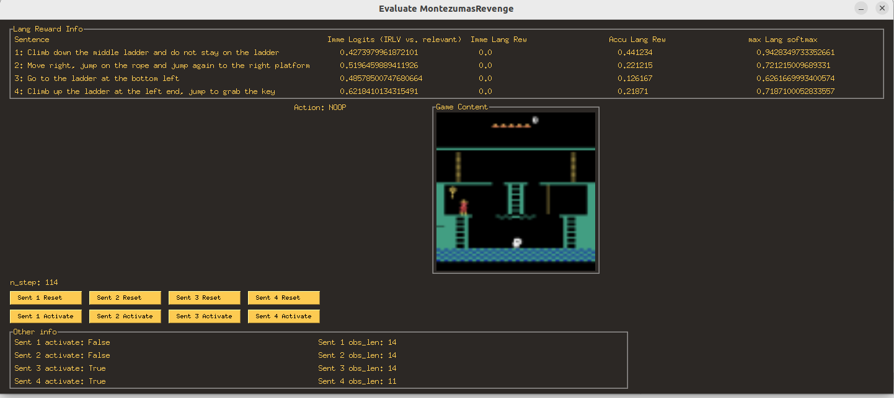
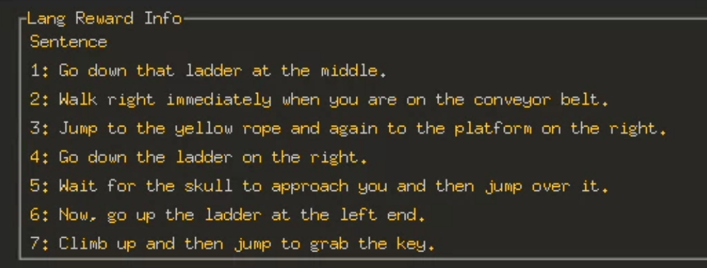
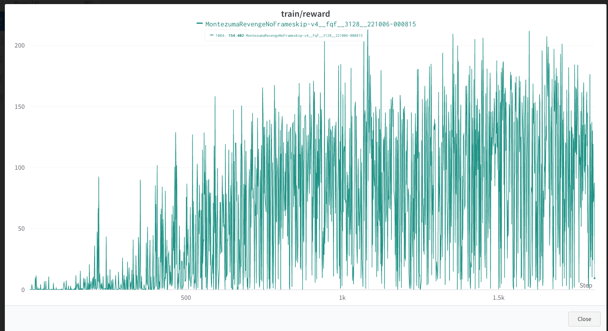

Last Week’s Work Review#
We finally complete both the language reward shaping module and the language reward shaping RL agent. This month we are going to upgrade and refine the reward shaping approach.
- There are some issues for the current approach
- the RL environment config setting is not in the standard way (standard -> deepmind way)
- The whole training is quite heavy ( 60 it/sec -> ~46 hours to train 10M steps )
- It took too much ram space (25.1 GB for 1 gym env)
You need password to access to the content, go to Slack *#phdsukai to find more.
Part of this article is encrypted with password:
[TOC]
TODO List#

-
Self-attention pretraining Video text autoencoder
- Video -
action- text autoencoder (no more action information) - Random speed up or slow down the training video -> while the semantic meaning remains the same.
-
Trim Video and measure completeness(not applicable)
- Video -
-
Observe and handle side effect of language reward shaping
-
Consider the region of interests for the visual observation (Soft-discretisation of visual inputs) -
Data annotation on toxic demonstrations
21 OCT – 27 OCT
TODOs#
- try lang rew module w/o original image as input
-
try pretrain transformer before using it as binary classifier - use decay record high
- check video transcript academic papers
- Consider how to solve the following problems
- segment sentences into objects/actions (hard) (using phrase chunking model)
- grounding nouns with qualifiers (easy) (using phrase chunking model)
-
label the words with POS tags https://huggingface.co/flair/upos-english-fast?text=I+love+Berlin -
create hard negative examples using POS tags (swap the words with the same tag, e.g., left vs right, jump vs walk vs move) -
may use this as object detection module https://github.com/timy90022/One-Shot-Object-Detection
-
-
learn when the action is finished (too complex)
Action and Object detection#
in terms of pre-training, since now we know that the job of language reward module is to analyse whether both the “action” and the “objects” are relevant to the language description, we can then do the following
- Given video -> predict joystick actions -> match to the “verbs” in the language descriptions (verbs are extracted by an off-the-shelf language parser)
- Given video -> identify objects (may need training dataset or we check one-shot object-detection methods) -> match to the “nouns” in the language descriptions
How to train both action and object detection#
- so far it looks like we cannot detach them from each other
- the proposed architecture

10 OCT – 20 OCT
TOC
- train the language reward shaping module without action info as input
- human inspection of the reward module
- train the game playing agent.
Language Reward shaping module training#
Goal of the language reward shaping module:
-
predicting if a sequence of observation and a sentence description is matched or not
-
output range [0, 1], 0 -> mismatched, 1 -> matched, 0.5 -> not sure
-
The final output = $\max(output - 0.5, 0)$
- it means we only give rewards when the module think that the pairs are matched.
Transformer architecture is difficult to converge#
- The module cannot learn when using Transformer as backbone
- not sure if it is because of the learning rate issue.
- It can learn when we simply concatenate vectors and use MLP layer
Accuracy increases when we add $img_t - img_{t-1}$ relative offset#

Immediate Language Reward re-design#
-
In Goyal’s original work, the immediate language reward is calculated as
- imme_lang_rew = $f_{t} - f_{t-1}$ where $f_t$ is the output of the language reward shaping module at time $t$
- the input of $f_t$ is 1) the past observation from time $t-\text{memory size}$ to time $t$ plus 2) the walkthrough sentence.
-
The new approach is
-
imme_lang_rew = $f_{t} - f_{\text{record high}}$ where $f_{\text{record high}}$ is the highest historical value of $f$
-
advantages
- Now, there is an upper limit for the accumulated language reward, the agent will not cheat lots of rewards any more by repeating its actions.
-
Human inspection#
climb down the middle ladder#
correct move:
* jump to the right platform
- we can see that the language reward model gives very little amount of reward for sentence “climb down the ladder on the right”
- possible reason: the module gives reward as it saw that the agent moved left and the word “right” was appeared in the sentence.
* stay on the ladder
-
the language reward module gave the reward even if the agent did not climb down the ladder.
- possible reason: the module gives high reward as long as the agent is close to the ladder object, while it is less sensitive to the actions
jump from the conveyor belt to rope and jump again to the right platform#
correct move
* stay on the conveyor belt
- The language reward module gives wrong reward for the sentence “go to the top of the ladder on the right”
- Possible reason: the module cannot recognise the target ladder (“the ladder on the right”) Instead, it found out that the agent was close to the middle ladder and hence gives reward.
Room one manually selected walkthrough#

sentence: [
"Climb down the middle ladder and do not stay on the ladder",
"Move right, jump on the rope and jump again to the right platform",
"Go to the ladder at the bottom left",
"Climb up the ladder at the left end, jump to grab the key"
]
Known issues for the current language reward shaping module#
-
it gives more weights to the object detection than action detection,
-
thus it gave wrong rewards when the agent was close to the target object but did the wrong action
-
e.g., it gave high rewards for sentence “climb down the ladder” when the agent was staying on the ladder
-
-
it tried to analyse each single word instead of recognising the phrases and the qualifier
- e.g., it gave rewards for sentence “go to the ladder on the right” when the agent was at the ladder on the middle
- e.g., it gave reward for sentence “climb down the ladder on the right” when the agent was jumping to the right platform
- the module cannot correctly handle the phrase “the ladder on the right”, instead, it treated it as two things – “ladder” and “right”
1 OCT – 9 OCT
RL Training Result#
Recall Deepmind DQN replay


Lang Rew RL agent trained after about 2 million frames (steps)#
Analysis#
-
The agent got stuck at local minimum
-
the agent wanders around the ladder, and perform actions that did not change the states but activate the reward of other sentences that are not relevant to the current state
- (e.g., performing “RIght Jump” action while on the ladder will not change the state, but the language reward shaping module will believe that sentence 3 is activated)
-
the agent can reach about 150 language rewards by cheating like this

Solutions#
-
Set the maximum limit for each sentence’s reward
- prevent the agent from doing the same thing repeatedly
-
Remove action information from the language reward shaping module
- the agent is less likely to activate irrelevant sentences
-
A better reward sentence activation mechanism that prevent cheating
-
Current mechanism
- at initial state, only sentence 1 is activated, when the accumulated reward of sentence 1 reaches 0.2 (hyper-parameter), the next sentence is activated
- the language reward is the sum of the reward of all activated sentences
-
Possible Improvements: limit the number of activated sentence: we activate the next instruction sentence only when
- the current instruction is 50 percent complete, and
- the previous instruction is completed, also we deactivate the completed instruction
- so not more than 2 sentences are activated at each step
-
This requires the language reward shaping module to detect the completeness of the instructions
- how: for language reward module training dataset, the output is no more binary classification about relevancy, but the completeness of the description, 0 means 0% completeness, 1 means 100% completeness. If the description and the video are negatively paired, then the target label is also 0
- For positively paired description and video, if we cut 30% of video (end of the video), then target label is 0.7
-
Paper Reading Notes#
-
CoBERL Contrastive BERT for Reinforcement Learning
- Author: Andrea Banino et. al. DeepMind
- Publish Year: Feb 2022
- Review Date: Wed, Oct 5, 2022
-
- Author: Steven Kapturowski et. al. DeepMind
- Publish Year: September 2022
- Review Date: Wed, Oct 5, 2022
-
An Efficient Spatio-Temporal Pyramid Transformer for Action Detection
- Author: Yuetian Weng et. al.
- Publish Year: Jul 2022
- Review Date: Thu, Oct 20, 2022
-
A Deep-One Shot Network for Query-Based Logo Retrieval
- Author: Ayan Kumar Bhunia et. al.
- Publish Year: Jul 2019
- Review Date: Mon, Oct 24, 2022
-
One-Shot Object Detection With Co-Attention and Co-Excitation
- Author: Ting-I Hsieh et. al.
- Publish Year: Nov 2019
- Review Date: Mon, Oct 24, 2022
-
Semantic-Aligned Fusion Transformer for One Shot Object Detection
- Author: Yizhou Zhao et. al.
- Publish Year: 2022
- Review Date: Mon, Oct 24, 2022